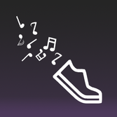

Past Experience
ELFIN
ELFIN is a mission to better understand space weather. As part of the science processing team, I assist with automating the creation of files containing science data.
AudioDash
AudioDash enables users to train their reaction time for multiple sports and athletic activities. The app, created at UC Irvine COSMOS 2017, features the use of sound spatialization in order to simulate a 3D environment with sounds originating from different locations.
Logos

Logos is a news application dedicated to providing a platform that can be used to engage users in conversation and to inspire the sharing of different perspectives.